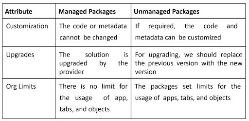

AdminConcepts
Email Delivery:
Why is email deliverability important in the context of Salesforce?
Email deliverability ensures that emails sent from Salesforce reach the intended recipients' inboxes instead of being marked as spam or blocked. It directly impacts the effectiveness of marketing campaigns and communication with customers.
How can you optimize email deliverability in Salesforce?
You can optimize email deliverability by configuring Sender Authentication (SPF, DKIM, DMARC), managing bounce handling, maintaining a good sender reputation, ensuring clean and well-segmented lists, and regularly monitoring deliverability metrics.
What role do SPF, DKIM, and DMARC play in email deliverability?
SPF (Sender Policy Framework), DKIM (DomainKeys Identified Mail), and DMARC (Domain-based Message Authentication, Reporting, and Conformance) are authentication protocols that help verify the legitimacy of an email's sender and enhance deliverability by reducing the chances of spoofing and phishing.
Related Questions:
-
What is the importance of email deliverability in the context of Salesforce and marketing campaigns?
-
How can you optimize email deliverability in Salesforce to ensure your emails reach the intended recipients' inboxes?
-
Explain the concept of email bounce handling. How can Salesforce assist in managing bounced emails?
Email Infrastructure:
Describe the components involved in the email infrastructure of Salesforce for sending mass emails.
The components include Salesforce's email sending servers, email templates, sender profiles, deliverability settings, contact or lead records, and potentially, Marketing Cloud integration.
How does Salesforce manage unsubscribe and opt-out requests?
Salesforce provides built-in mechanisms to manage unsubscribe and opt-out requests. When recipients click the unsubscribe link in an email, Salesforce updates their preferences or suppresses them from future email communications.
What's the difference between single-send emails and mass emails in Salesforce's email infrastructure?
Single-send emails are manually sent to individual recipients, while mass emails are sent to multiple recipients using templates and contact/lead lists. Mass emails are often part of marketing campaigns.
Related Questions:
-
What components are involved in the email infrastructure of Salesforce when sending out mass emails?
-
How does Salesforce handle the management of unsubscribe and opt-out requests from recipients?
-
Explain the difference between single-send emails and mass emails in terms of Salesforce email infrastructure.
-
Describe the benefits of using a Marketing Cloud Connector to integrate external email systems with Salesforce.
Email Security:
How can Salesforce prevent email spoofing and phishing attacks?
Salesforce employs authentication mechanisms like SPF, DKIM, and DMARC to verify the sender's authenticity. Additionally, users are educated about recognizing phishing attempts through training and email header analysis.
How does Salesforce protect sensitive customer data during transactional emails? (must)
Salesforce allows dynamic data masking, where sensitive data in emails can be masked to prevent exposure. The use of secure connections (SSL/TLS) also encrypts data during transmission.
Related Questions:
-
What measures can be taken to prevent email spoofing and phishing attacks in Salesforce?
-
How does Salesforce protect sensitive customer data when sending transactional emails?
-
Explain the importance of SSL/TLS encryption in email communications. How is this implemented in Salesforce?
-
Describe the role of sandbox environments in testing email functionality while maintaining security.
-
How can you monitor and mitigate the risk of email-related security breaches in Salesforce?
Email Relay:
What's the purpose of an email relay in Salesforce?
An email relay in Salesforce acts as an intermediary server that facilitates the delivery of emails. It's useful for routing outbound emails through a more reliable and trusted server, enhancing deliverability.
How would you set up an email relay in Salesforce?
To set up an email relay, navigate to "Setup," search for "Email Relay Activation," and follow the prompts to configure Simple Mail Transfer Protocol (SMTP) server details, credentials, and authentication methods.
Related Questions:
-
What is an email relay, and why might you need one in the context of Salesforce email delivery?
-
Describe the process of setting up an email relay in Salesforce for outbound email communication.
-
What are some common challenges associated with configuring and maintaining email relays in Salesforce?
-
How does Salesforce handle inbound emails and routing them to appropriate records or users?
-
Can you explain the difference between a dedicated IP address and a shared IP address in the context of email relays in Salesforce?
Debugging in Salesforce:
A user complains about not receiving an expected email from a workflow rule. How would you debug this issue?
First, check if the workflow rule and email alert are correctly configured. Then, review the recipient's email address and verify that the workflow rule criteria are met. Finally, analyze debug logs to identify any issues.
How can Salesforce debug logs help investigate email-related issues?
Debug logs capture detailed information about email processes, including sending, delivery, and errors. By reviewing these logs, you can identify issues, such as validation errors or workflow failures, that might be causing email problems.
Related Questions:
-
What tools and techniques are available in Salesforce for debugging email delivery issues?
-
A user reports not receiving an expected email from a workflow rule. What steps would you take to troubleshoot this issue?
-
How can you use the "Deliverability" settings in Salesforce to diagnose and resolve email deliverability problems?
-
What are the common reasons behind emails being marked as spam, and how can you address them in Salesforce?
-
Describe the process of using Salesforce debug logs to investigate email-related issues.
Territory Management:
Territory Management in Salesforce is a feature that allows organizations to efficiently manage their sales operations by dividing their customer base and sales team into distinct geographic or logical territories.
This helps organizations assign accounts, leads, and opportunities to specific sales representatives or teams based on predefined criteria.
Here's more information about how it works:
-
1. Territory Definition: Territories can be defined based on various criteria, such as geographic regions, industry segments, product lines, or any custom criteria that suits the organization's sales strategy.
-
2. Territory Hierarchy: Salesforce supports the creation of a territory hierarchy, allowing for a multi-level structure where territories can have sub-territories. This hierarchy can be representative of how the organization is structured, whether it's by region, business unit, or other factors.
-
3. Assignment Rules: Within each territory, you can define rules to automatically assign accounts, leads, and opportunities. These rules can be based on factors like geographic location, industry, revenue potential, and more.
-
4. Record Ownership: Territory Management automatically assigns ownership of records (accounts, leads, opportunities, etc.) to the appropriate sales representatives or teams within their respective territories.
-
5. Collaboration: Territory Management encourages collaboration by allowing sales representatives and teams to focus on their designated areas, resulting in better knowledge of local markets and customer needs.
-
6. Sales Analytics: With proper territory assignment, organizations can gather more accurate sales analytics and insights. It becomes easier to measure the performance of specific territories and identify areas for improvement.
-
7. Flexible Configuration: Salesforce provides flexibility in setting up Territory Management to align with an organization's unique sales structure and needs. It can accommodate changes and reorganizations as the business evolves.
Territory Management is particularly beneficial for larger organizations with a widespread customer base and diverse sales teams. It ensures that the right salesperson is assigned to the right accounts and opportunities, ultimately improving customer relationship management and sales effectiveness.
It's worth noting that implementing and configuring Territory Management can be complex, and it's recommended to plan thoroughly and possibly involve Salesforce experts to ensure a successful implementation.
Managed Packages:
What is a managed package in Salesforce?
A managed package is a container for distributing and installing applications and components on the Salesforce platform. It encapsulates code, metadata, and other resources while providing versioning and upgrade capabilities.
What are the key benefits of using managed packages?
Managed packages offer benefits like controlled versioning, IP protection, upgrade paths, and the ability to distribute and sell applications on the Salesforce AppExchange.
How does security work in managed packages?
Managed packages allow developers to specify which components are exposed and which are hidden from subscribers. Subscribers can't access the source code of managed components, promoting security and intellectual property protection.
Can components be modified in a managed package once it's installed by a subscriber?
No, components within a managed package can't be modified by subscribers. Changes to the package must be made by the package's developers, who can then release new versions.
How are upgrades managed in a managed package?
Upgrades are managed through new versions of the managed package. Developers release new versions containing enhancements, bug fixes, and changes. Subscribers can choose to upgrade to the latest version.
Unmanaged Packages:
What is an unmanaged package in Salesforce?
An unmanaged package is a collection of components, such as custom objects, fields, and code, that can be distributed as a bundle. However, unlike managed packages, there is no versioning, upgrade path, or IP protection for unmanaged packages.
What are some use cases for using unmanaged packages?
Unmanaged packages are often used for sharing sample applications, development components, or configurations with other users. They're useful for collaborating on projects or sharing code snippets.
Can components within an unmanaged package be modified after installation?
Yes, components in an unmanaged package can be freely modified by the installing organization. Changes made to these components won't affect the original package or other organizations.
What are the considerations when using unmanaged packages in a development environment?
When using unmanaged packages, it's important to understand that changes made to the components will not be tracked or versioned. This can lead to challenges in managing and tracking changes over time.
Is there any upgrade process for unmanaged packages?
Unmanaged packages do not have an upgrade mechanism like managed packages. If changes are needed in an unmanaged package, the updated components need to be manually distributed and updated.
Difference between Managed and Unmanaged Package?
Unmanaged packages
-
Unmanaged packages are typically used to distribute open-source projects or application templates to provide developers with the basic building blocks for an application.
-
Once the components are installed from an unmanaged package, the components can be edited in the organization they are installed in.
-
The developer who created and uploaded the unmanaged package has no control over the installed components, and can't change or upgrade them.
-
Unmanaged packages should not be used to migrate components from a sandbox to production organization. Instead, use Change Sets.
Managed packages
-
Managed packages are typically used by Salesforce partners to distribute and sell applications to customers.
-
These packages must be created from a Developer Edition organization.
-
Using the AppExchange and the License Management Application (LMA), developers can sell and manage user-based licenses to the app.
-
Managed packages are also fully upgradeable. To ensure seamless upgrades, certain destructive changes, like removing objects or fields, can not be performed.
Managed packges can have threestates, such as:
-
Managed - Beta (an early version of the managed package or testing apps);
-
Managed - Released (this means that the package is launched on AppExchange and publicly available);
-
Managed - Installed (this means a package was installed from another Salesforce org, but it’s managed).

Difference between 1GP Vs 2GP?
| 1GP | 2GP |
| The packaging org is the main source for the metadata in your package. | Your version control system is the main source (source-driven system) for the metadata in your package. And unlike 1GP, 2GP doesn’t use packaging or patch orgs. |
| The packaging org owns the package. The metadata in the package resides in the packaging org. | The Dev Hub owns the package, but the Dev Hub doesn’t contain the packaged metadata. We recommend that you enable Dev Hub in your partner business org. |
| A packaging org can own only one managed package. | A Dev Hub can own one or more packages. |
| A namespace can be associated with only one package. | Multiple packages can use the same namespace. |
| Global Apex is the only way to share code across packages. | Multiple packages sharing the same namespace can share code using public Apex classes and methods with @namespaceAccessible annotation. |
Salesforce Communities Overview:
What is a Salesforce Community?
A Salesforce Community is an online platform that allows organizations to extend their Salesforce environment to external users such as customers or partners by enabling them to interact, collaborate and access information.
What are the key benefits of using Salesforce Communities?
Salesforce Communities offer benefits like improved customer engagement, self-service support, partner collaboration, brand enhancement, and the ability to provide personalized experiences to different user groups.
How can you differentiate between a Customer Community and a Partner Community?
A Customer Community is designed to provide support, resources, and interactions for external customers. A Partner Community, on the other hand, is tailored for collaborating with partners, distributors, and suppliers to streamline business processes.
Community Setup and Configuration:
What are the main components of a Salesforce Community?
A Salesforce Community consists of components such as Lightning Pages, Lightning Components, Themes, Templates, Community Builder, and Access Settings that collectively define the user experience.
How can you customize the look and feel of a Salesforce Community? (must)
You can use Community Builder to customize the layout, branding, colors, fonts, and navigation of a Salesforce Community without the need for extensive coding.
What is the role of a Lightning Template in a Community?
A Lightning Template provides the structure and layout for a Community's pages. It defines the arrangement of components, navigation menus, and other visual elements.
Community Engagement and Security:
1. How can communities improve customer self-service?
Communities offer knowledge bases, FAQs, forums, and case management tools that empower customers to find solutions on their own and connect with other users for assistance.
2. What is the role of Chatter in Salesforce Communities?
Chatter enables real-time collaboration and communication within a Community. Users can share updates, files, comments, and @mentions to facilitate engagement.
3. How can you ensure data security and control in Salesforce Communities?
Salesforce provides various security mechanisms like sharing settings, roles, profiles, and permission sets to control the data and features accessible to different user groups in the Community.
Community Engagement Metrics:
1. What are some key metrics used to measure the success of a Salesforce Community?
Metrics like user adoption rates, engagement levels (such as active users, logins, and contributions), case deflection rates, and customer satisfaction scores are used to evaluate Community effectiveness.
2. How can you use Community Analytics to gain insights?
Community Analytics provides data about user behavior, content popularity, and case resolutions, enabling organizations to identify trends and areas for improvement.
Tableau CRM
1. What is Tableau CRM in Salesforce?
Tableau CRM, formerly known as Einstein Analytics, is a business intelligence and data analytics platform built natively on the Salesforce platform. It allows users to explore, analyze, and visualize data to gain insights and make informed business decisions.
2. How does Tableau CRM differ from traditional Salesforce reporting?
While traditional Salesforce reporting provides basic data visualization and reporting capabilities, Tableau CRM offers more advanced analytics features, including AI-powered insights, predictive analytics, and more sophisticated data visualization options.
3. What are some key features of Tableau CRM?
Tableau CRM offers features like AI-driven insights, data exploration, predictive analytics, customizable dashboards, data connectors to various sources, and the ability to embed analytics within Salesforce applications.
4. How does Tableau CRM leverage AI and machine learning?
Tableau CRM uses AI and machine learning to automatically surface insights from data, identify trends, and provide predictive analytics. It can analyze patterns in data to help users understand what factors drive certain outcomes.
5. Can Tableau CRM be integrated with other Salesforce products?
Yes, Tableau CRM is seamlessly integrated with other Salesforce products and services. It can be embedded within Salesforce applications, allowing users to access analytics and insights directly from their Salesforce environment.
6. What is the process of creating a dashboard in Tableau CRM?
To create a dashboard in Tableau CRM, you would first need to connect to your data source, import the necessary data, and then use the drag-and-drop interface to build visualizations and charts. These components can be organized into a dashboard to present a comprehensive view of your data.
7. How does Tableau CRM help sales teams improve their performance?
Tableau CRM can help sales teams by providing them with real-time insights into their sales data, customer behavior, and trends. This information can help sales professionals identify opportunities, optimize their strategies, and make data-driven decisions to drive higher sales performance.
8. Can Tableau CRM be used for industries other than sales and marketing?
Absolutely, Tableau CRM is versatile and can be used across various industries such as finance, healthcare, retail, and more. It's designed to help businesses in any sector analyze their data and gain valuable insights.
9. Is Tableau CRM suitable for small businesses, or is it more geared towards enterprises?
Tableau CRM is designed to cater to businesses of all sizes. While larger enterprises might leverage its full capabilities, small businesses can also benefit from its user-friendly analytics tools and customizable dashboards.
10. Are there any specific technical skills required to use Tableau CRM effectively?
While Tableau CRM is designed to be user-friendly, having a basic understanding of data concepts and analytics can be helpful. Familiarity with data visualization principles and some experience with creating reports and dashboards can enhance your effectiveness in using the tool.
Salesforce for Outlook
Salesforce for Outlook is a Microsoft Outlook integration provided by Salesforce. It's a tool that allows users to seamlessly integrate and synchronize their Salesforce data and activities with their Microsoft Outlook email client. This integration enhances user productivity by enabling them to work with Salesforce records and information directly within their Outlook environment. Here are some key points about Salesforce for Outlook:
-
Integration: Salesforce for Outlook integrates Salesforce data, such as contacts, leads, opportunities, and cases, with Microsoft Outlook. It provides a two-way sync between the two systems, ensuring that changes made in one platform are reflected in the other.
-
Email Integration: With Salesforce for Outlook, users can track and associate emails sent and received in Outlook with specific Salesforce records. This helps maintain a comprehensive communication history within Salesforce.
-
Calendar Integration: Users can sync their Outlook calendar events with Salesforce records, ensuring that their schedules are consistent across both platforms.
-
Contact and Lead Management: Salesforce for Outlook allows users to view and edit Salesforce contacts and leads directly within Outlook. This makes it easy to update and manage customer and prospect information.
-
Offline Access: Users can access and work with Salesforce data even when they are offline. Changes made offline are synchronized with Salesforce once the user is back online.
-
Customization: Salesforce for Outlook can be customized to match an organization's specific needs. Administrators can configure which Salesforce objects and fields are synchronized and define rules for automatic synchronization.
-
User Productivity: The integration streamlines user workflows by eliminating the need to switch between different applications. This helps improve user efficiency and reduces manual data entry.
-
Installation: Salesforce for Outlook is a plugin that needs to be installed on users' machines. This integration requires initial setup and configuration, including authentication and choosing the types of data to synchronize.
-
Compatibility: Salesforce for Outlook is compatible with Microsoft Outlook desktop versions. It might have compatibility limitations with certain Outlook versions or configurations, so it's important to review Salesforce's documentation.
-
Considerations: While Salesforce for Outlook provides significant benefits, it's important to consider potential challenges related to data synchronization, performance, and user training during the implementation process.
-
Alternatives: Salesforce offers various integration options beyond Outlook, including integrations with Gmail, other email platforms, and mobile devices, to ensure that users can access their Salesforce data in the way that best suits their workflow.
In summary, Salesforce for Outlook is a tool that enhances productivity by seamlessly integrating Salesforce data and activities with Microsoft Outlook, allowing users to work efficiently and keep their data up to date across both platforms.
Lightning synchronization
Lightning synchronization is a Salesforce feature that enables seamless synchronization and integration of Salesforce data with email and calendar applications, particularly Microsoft Outlook. This integration helps users keep their Salesforce records up-to-date by automatically syncing data between Salesforce and their chosen email and calendar platforms. Here's a more detailed overview of Lightning synchronization:
-
Integration with Email and Calendars: Lightning Sync allows users to connect their Salesforce instance with their email and calendar accounts. This integration primarily supports Microsoft Outlook and Google Workspace. By doing so, users can ensure that their contacts, leads, events, and other related data are synchronized between Salesforce and their chosen email application.
-
Bi-Directional Synchronization: Lightning Sync provides bi-directional synchronization. This means that changes made in either Salesforce or the integrated email application are automatically reflected in the other system. For instance, if a user updates a contact's information in Salesforce, those changes are mirrored in their email contacts list.
-
Contact and Event Synchronization: The key elements that Lightning Sync synchronizes include contacts and events. Contacts can be associated with leads, accounts, or opportunities in Salesforce, while events (meetings, calls, etc.) can be synced with calendar events.
-
Reduced Data Entry and Improved Accuracy: By enabling Lightning Sync, users can eliminate the need for manual data entry or copying and pasting information between Salesforce and their email and calendar platforms. This reduces the chances of errors and ensures that information is consistent across systems.
-
Efficient Communication Tracking: With Lightning Sync, users can automatically associate email communication and calendar events with the appropriate Salesforce records. This means that email threads, conversations, and meeting history are conveniently linked to the relevant contacts, leads, opportunities, or cases.
-
Customization and Configuration: Administrators have the ability to configure which Salesforce objects and fields are synchronized, allowing them to tailor the integration to meet the organization's specific needs. They can set up mapping between Salesforce fields and corresponding email and calendar fields.
-
User Preferences: Users can control the synchronization behavior based on their preferences. For example, they can specify which contacts or events to sync, and they can manage their sync settings through their personal settings in Salesforce.
-
Security and Privacy: Salesforce maintains security and privacy considerations in Lightning Sync. Synchronized data is transferred using
-
secure protocols, and the solution adheres to Salesforce's security standards.
-
Implementation: Implementing Lightning Sync involves initial setup, configuration, and ensuring compatibility with the chosen email and calendar platforms. Salesforce provides documentation and guidelines to help organizations successfully deploy and use Lightning Sync.
In summary, Lightning Sync is a feature designed to enhance data accuracy, streamline workflows, and improve communication tracking by seamlessly synchronizing Salesforce data with email and calendar applications like Microsoft Outlook and Google Workspace.
Einstein Activity Capture
Einstein Activity Capture is a Salesforce feature that automatically captures and logs interactions between users and their clients or customers. It's designed to streamline the process of tracking customer engagement by automatically capturing emails, events, and other activities from email applications like Microsoft Outlook and Google Workspace (formerly G Suite), and then associating them with the relevant records in Salesforce. Here's a more detailed overview of Einstein Activity Capture:
-
Automated Activity Tracking: Einstein Activity Capture automates the process of tracking and logging customer interactions, such as emails and calendar events. It captures this data from email applications without requiring users to manually input the information into Salesforce.
-
Email Integration: Einstein Activity Capture integrates with email platforms like Microsoft Outlook and Google Workspace. It captures emails sent and received, including the email body, subject, recipients, and attachments.
-
Event Logging: In addition to emails, Einstein Activity Capture also logs calendar events, such as meetings and calls. It records details like the event title, date, participants, and location.
-
Automatic Association: Captured activities are automatically associated with the relevant records in Salesforce, such as contacts, leads, accounts, opportunities, or cases. This means that users can easily see the communication history associated with each record.
-
Improved Productivity: Einstein Activity Capture eliminates the need for users to manually enter activity information into Salesforce. This saves time and reduces the chances of data entry errors, allowing users to focus more on productive tasks.
-
Accurate Insights: By automatically capturing and associating activities with records, Einstein Activity Capture provides a more accurate and complete view of customer interactions. This can help sales teams better understand customer engagement and tailor their strategies accordingly.
-
Mobile Access: Captured activities are also accessible on Salesforce mobile apps, ensuring that users can view customer interactions even when they are on the go.
-
Email Tracking: Einstein Activity Capture tracks when emails are opened by recipients, providing insights into recipient engagement. Users can receive notifications when an email is opened, helping them time their follow-up actions effectively.
-
Customizable Settings: Administrators can configure Einstein Activity Capture settings to align with the organization's needs. This includes defining which users or profiles have access to the feature and customizing the types of activities to capture.
-
Privacy and Compliance: Einstein Activity Capture respects privacy and compliance regulations. Organizations can configure settings to exclude certain email domains, manage data retention policies, and ensure that captured data aligns with privacy requirements.
-
Implementation: Enabling Einstein Activity Capture typically involves configuration in Salesforce, setting up email integration, and ensuring that the feature is correctly aligned with the organization's processes.
In summary, Einstein Activity Capture is a feature within Salesforce that automates the tracking and logging of customer interactions, including emails and calendar events. By doing so, it provides a more complete and accurate picture of customer engagement and enhances user productivity.
Knowledge of Salesforce security products including event monitoring, encryption, audit trail, data masking, and Shield?
1. Event Monitoring: Event Monitoring is a Salesforce feature that provides detailed insights into user activities, logins, and data access in real time. It helps organizations monitor and analyze user behavior, detect anomalies, and maintain security and compliance. By capturing a wide range of events and interactions within the Salesforce platform, Event Monitoring empowers administrators and security teams to gain visibility into how the platform is being used and identify potential security threats.
Key aspects of Event Monitoring include:
-
Event Types: Salesforce captures various types of events, such as logins, logouts, report exports, record views, and data exports. Each event type provides valuable information about user actions and system interactions.
-
Real-Time Insights: Event Monitoring provides near-real-time insights into user activities. This enables organizations to respond promptly to suspicious or unusual behavior.
-
Event Monitoring Analytics: Organizations can leverage Event Monitoring data in conjunction with tools like Salesforce's Event Monitoring Analytics app or external business intelligence tools to gain actionable insights from event data.
-
Security and Compliance: Event Monitoring assists in meeting compliance requirements by providing evidence of adherence to security policies and data protection regulations.
-
Threat Detection: By monitoring patterns and trends in event data, organizations can identify potential threats or unauthorized access attempts.
2. Encryption: Encryption is a security practice that involves converting data into a coded format that can only be decoded and understood by authorized parties with the appropriate decryption keys. In Salesforce, encryption helps protect sensitive data at rest and in transit, adding an extra layer of security to prevent unauthorized access to critical information.
Key aspects of Encryption in Salesforce include:
-
Platform Encryption: Salesforce offers Platform Encryption, which allows organizations to encrypt sensitive data stored in the Salesforce platform at rest. This includes fields on standard and custom objects. Encrypted data remains readable to authorized users, but unauthorized users cannot decipher it without the encryption keys.
-
Data Protection: Platform Encryption helps organizations protect sensitive data such as Personally Identifiable Information (PII), financial data, and health information, ensuring compliance with data protection regulations.
-
Encryption Key Management: Encryption keys are managed by Salesforce, and organizations can control who can access and manage these keys. Keys are stored separately from the encrypted data.
-
Data Security and Privacy: By encrypting sensitive data, organizations enhance data security and privacy, even in scenarios where data is stored in multi-tenant environments.
-
Performance Considerations: While encryption adds a layer of security, it may have performance implications due to the overhead of encryption and decryption processes. Organizations should consider these factors when planning their encryption strategy.
3. Audit Trail: The Audit Trail feature in Salesforce allows administrators to track changes made to data and metadata within the organization. It provides a detailed record of actions taken by users, such as creating, modifying, or deleting records, as well as changes to configuration settings. Audit Trail helps organizations maintain transparency, accountability, and compliance by providing an audit log that can be used for troubleshooting, compliance audits, and security analysis.
Key features of Audit Trail include:
-
Recording of user actions and changes to records, objects, fields, and configuration settings.
-
Retention of audit logs for up to six months.
-
The ability to monitor both standard and custom objects.
-
Support for scheduled export of audit log files for further analysis.
4. Data Masking: Data Masking, also known as Data Obfuscation, is a feature within Salesforce that enables administrators to protect sensitive data in non-production environments by replacing actual data with fictional or masked data. This is particularly important when working with sandbox environments used for development, testing, or training purposes. Data Masking helps maintain data privacy and security while still allowing realistic testing and development scenarios.
Key features of Data Masking include:
-
Replacement of sensitive data with realistic yet fictitious values.
-
The ability to create and customize masking policies for different types of data (e.g., email addresses, phone numbers, names).
-
Support for native Salesforce data masking as well as integration with third-party data masking tools.
5. Shield: Salesforce Shield is a suite of security-related features designed to provide enhanced data protection, compliance, and governance capabilities within the Salesforce platform. Shield helps organizations meet regulatory requirements and ensure the security of sensitive data. The Shield suite includes three main components: Platform Encryption, Event Monitoring, and Field Audit Trail.
Key components of Shield include:
-
Platform Encryption: This feature allows organizations to encrypt data at rest, ensuring that sensitive data stored in the Salesforce database is protected even from unauthorized access.
-
Event Monitoring: Event Monitoring provides detailed insights into user activities, logins, and data access in real time. It helps organizations detect and respond to potential security threats or breaches.
-
Field Audit Trail: Field Audit Trail extends the standard Salesforce Audit Trail by providing a more granular level of auditing. It allows organizations to track changes to individual fields on records, offering enhanced visibility into data changes.
What are different types of Governor limits with limits in salesforce?
In Salesforce, it is the Governor Limits which controls how much data or how many records you can store in the shared databases. Why? Because Salesforce is based on the concept of multi-tenant architecture. In simpler words, Salesforce uses a single database to store the data of multiple clients/ customers.
To make sure no single client monopolizes the shared resources that is why Salesforce introduced the concept of Governor Limits which is strictly enforced by the Apex run-time engine.
Here are some of the different types of governor limits in Salesforce along with their respective limits:
1. Apex Limits:
-
SOQL (Salesforce Object Query Language) Queries: 100 queries per transaction.
-
DML Statements: 150 DML statements (insert, update, delete) per transaction.
2. Visualforce Limits:
-
View State Size: Maximum view state size of 135 KB.
-
Total Size of All Apex Requests: Total request size cannot exceed 6 MB.
-
Maximum Depth of Nested Components: Maximum of 5 levels of component nesting.
3. Email Limits:
-
Emails Sent: Maximum of 5,000 emails per organization per day.
-
Mass Email Recipients: Maximum of 5,000 external email addresses for mass emails.
-
Single Email Recipients: Maximum of 5,000 external email addresses for single emails.
4. Data Storage Limits: Data storage limits vary based on the Salesforce edition and additional purchased storage. For example, in Salesforce Enterprise Edition, the limit is 30 GB.
5. Streaming API Limits: Maximum of 100,000 events per 24-hour period for most organizations.
6. Platform Event Limits: Maximum of 2 million platform events per rolling 24-hour period.
7. API Limits: API requests are subject to various limits depending on the Salesforce edition and license type. For example, the Enterprise Edition has a limit of 1,000 API requests per user per 24-hour period.
8. Custom Metadata Limits: Maximum of 10,000 records per organization for most editions.
9. Lightning Platform Limits:
-
Number of Custom Tabs: Maximum of 25 custom tabs per app.
10. Scheduled Apex Limits: - Scheduled Jobs: Maximum of 100 scheduled jobs per organization.
It's important to note that governor limits are designed to maintain a balanced and stable performance across the Salesforce platform for all users. Developers and administrators should be mindful of these limits when designing and implementing solutions to ensure that their applications remain efficient and within acceptable limits. Salesforce documentation provides the most up-to-date information on these limits and their variations across different editions and features.
File Connect
"Files Connect" is a feature in Salesforce that allows users to connect and integrate external content repositories with their Salesforce instance. This feature enables users to access, search, and collaborate on files and documents stored in various external systems directly from within Salesforce, without the need to migrate or duplicate the files.
The external content repositories that can be connected through Files Connect might include:
-
1. SharePoint: Users can integrate Microsoft SharePoint repositories to access and collaborate on SharePoint files within Salesforce.
-
2. OneDrive for Business: This integration enables users to access and share files stored in their OneDrive for Business accounts directly from Salesforce.
-
3. Google Drive: Users can connect their Google Drive accounts to access and collaborate on Google Drive files within Salesforce.
-
4. Box: Integration with Box allows users to access and collaborate on Box files from within Salesforce.
-
5. Other Content Repositories: Depending on the Salesforce edition and available connectors, you might also be able to connect to other external content repositories or file storage systems.
The main benefit of Files Connect is that it enhances collaboration and streamlines the workflow by bringing external file repositories directly into the Salesforce environment. Users can attach external files to records, collaborate on files, and search for content across both Salesforce and the connected repositories seamlessly.